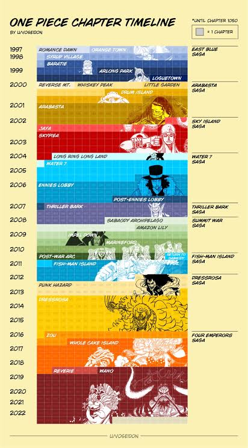

A saga atual é Saga Final, substituindo a antiga Saga do País de Wano.
Ver lista completa de sagas
- East Blue
- Alabasta
- Skypiea
- Water 7 / Enies Lobby
- Thriller Bark
- Guerra de Marineford
- Ilha dos Tritões
- Dressrosa
- Whole Cake
- País de Wano
- Saga Final